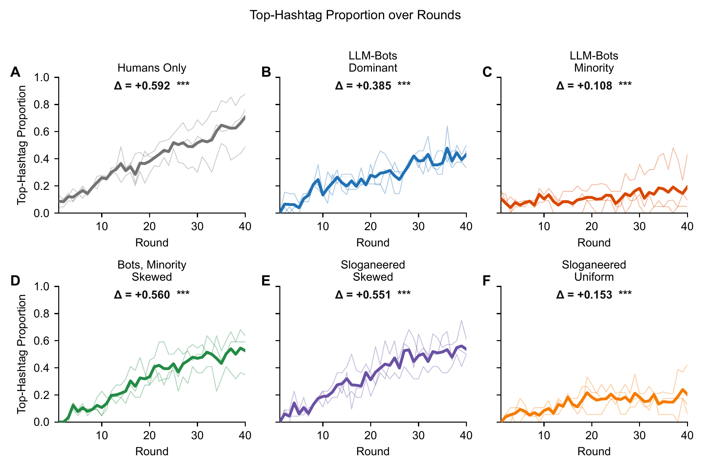
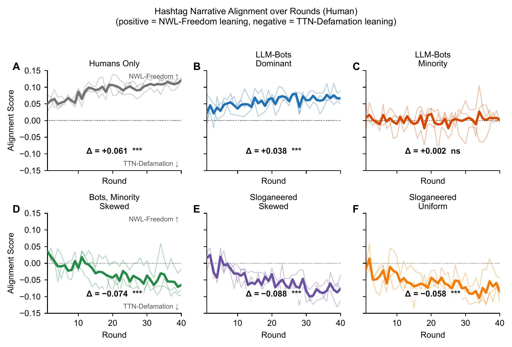
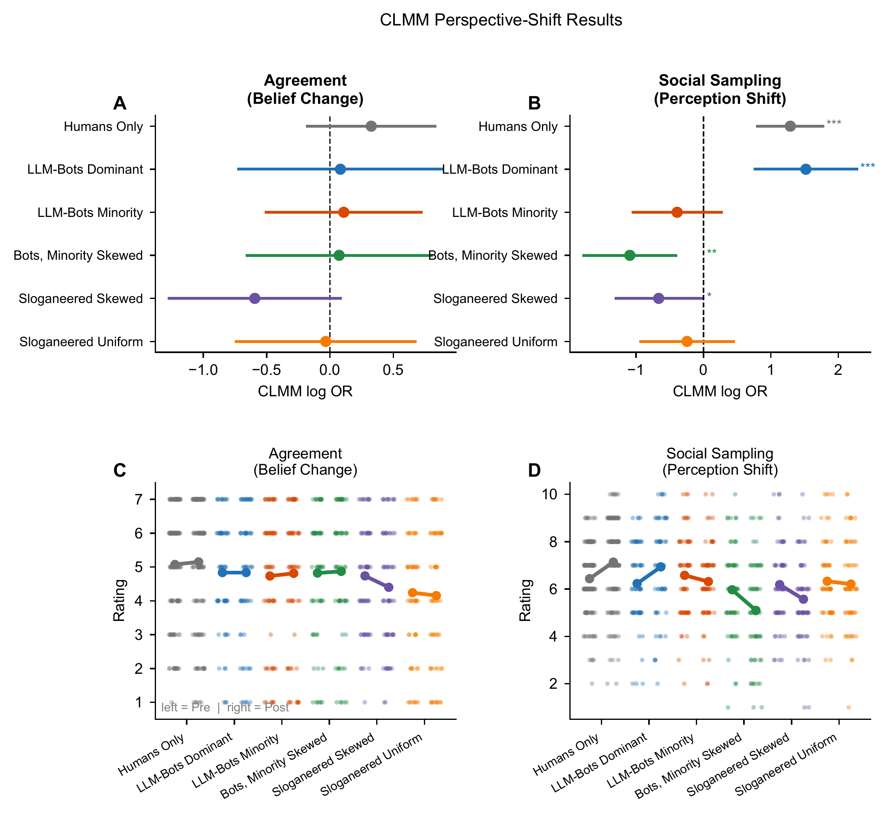

Human–AI Group Communication
Ongoing and Future Research
Manuscripts available upon request.
How AI Agents Shape Group Communication
I am extending the experimental network platform to study how human–AI hybrid groups coordinate over complex and ambiguous information. I have developed dynamically evolving AI agents that infer human belief states from language and adapt their messages during communication, and we are actively testing them.
The Human–AI Hashtag Game
As part of this ongoing work, I have run six experimental conditions involving 460 human participants, reported in a forthcoming paper. We examined hashtag coordination in human-only networks and hybrid networks containing agents that promoted either a prevalent or minority perspective on a contested news event.
In each round, participants proposed a hashtag describing a contested defamation case between the outlets News Laundry (NWL) and Times Television Network (TTN), and were rewarded when their hashtag matched their partner’s.

Engineered AI personas generate the hashtag signals introduced into human–AI networks
Each agent was assigned a persona that strongly endorsed either the TTN or NWL position.
To derive naturalistic hashtag distributions, agents from each perspective condition played the hashtag coordination game among themselves for 40 rounds (the same task structure as the human experiment). The resulting hashtags were aggregated across all rounds to form an empirical sampling distribution for each perspective: a pro-NWL distribution (Study 2) and a pro-TTN distribution (the baseline for Studies 3a–3f).
On each of 40 trials, every node in the network was randomly paired with one other node. Each pair simultaneously submitted a hashtag describing the focal narrative; pairs whose hashtags matched received a payoff.
Human participants entered their hashtag freely as text; AI agents sampled from their assigned hashtag distribution. Participants were not informed that AI agents were present and received no cue about whether their partner on any given trial was a human or an agent.
Preliminary Findings
Concentrated Minority Signals Increase Convergence and Shift Narrative Alignment
Organically sampled AI signals slowed convergence, whereas concentrating minority-perspective signals increased convergence and shifted human hashtag alignment toward the agents’ perspective. Uniformly sampled slogans also shifted alignment toward the minority perspective despite relatively slow convergence.

The rate of convergence depended on how concentrated the bots’ hashtag signal was
Human-only networks converged on shared hashtags increasingly aligned with the initially prevalent perspective.
Organically sampled agents slowed convergence regardless of perspective, and even agents who shared the majority view dampened rather than amplified the group’s drift toward it.
Concentrating the bots’ signal by mapping their responses onto a power-law distribution increased how quickly human groups converged.
Holding perspective constant (Minority vs. Minority Skewed) or hashtag source constant (Sloganeered Skewed vs. Uniform), concentrating the bots’ signal increased the convergence slope roughly 3.6- to 5.2-fold.

The agents’ perspective set the direction of their influence, while the concentration of their signal set its strength
In the Human-Only condition, alignment drifted toward the dominant NWL perspective. Bots holding that same perspective dampened rather than amplified this drift: in the LLM-Bots Dominant condition, alignment increased significantly across rounds, but by roughly 38% less than in human-only groups.
Organically sampled minority agents neutralized that drift without reversing it.
Once the same minority signal was concentrated on a single dominant hashtag, groups converged with descriptively similar slope estimates to human-only groups (without establishing equivalence) and their conventions shifted toward the minority TTN perspective.
Uniformly sampled slogans also shifted alignment toward the minority perspective despite relatively slow convergence.
Preliminary Findings: Perceived Consensus and Personal Judgments
Before and after the interaction, participants rated (a) their personal agreement with one perspective on a 1–7 scale and (b) their Social Sampling estimate—how many out of 10 people they believed shared their view.

Concentrated AI signals can alter how people read their social environment without a statistically detectable pre/post agreement effect
No condition showed a statistically significant change in participants’ personal judgments.
Participating in a hashtag coordination network—whether with other humans or with bots holding a majority or minority perspective—produced no statistically detectable change in participants’ personal assessments of the case; these nonsignificant effects do not establish equivalence or the absence of belief change.
Pre/post analyses of 443 participants showed increased perceived social agreement in human-only and prevalent-perspective conditions, decreased perceived agreement in two concentrated minority-perspective conditions, and no significant change in the remaining conditions.
The separate outcome analyses do not directly test whether the effects on personal agreement and social sampling differ.
Active Testing
Dynamically Evolving AI Agents
These preliminary results raise important questions. When do AI agents help a group reach consensus, and when do they silo perspectives? How do AI personas shape people's perceptions of what others believe, and what engineering is required for AI models to shift private beliefs?
To answer these questions, I have extended the hybrid platform with dynamically evolving AI agents that infer human belief states from language and adapt their messages over the course of communication. We are actively testing these agents. I will further test different network structures that test different human-AI pairwise connections (e.g., one AI to one human versus many humans to one AI).
Future experiments will test whether combining humans’ capacity to learn and reshape narratives through social interaction with LLMs’ capacity for rapid language coordination can produce a different kind of consensus: one that does not simply converge on the lowest common denominator, but preserves complexity, elevates alternative perspectives, and changes how people think even after communication ends.